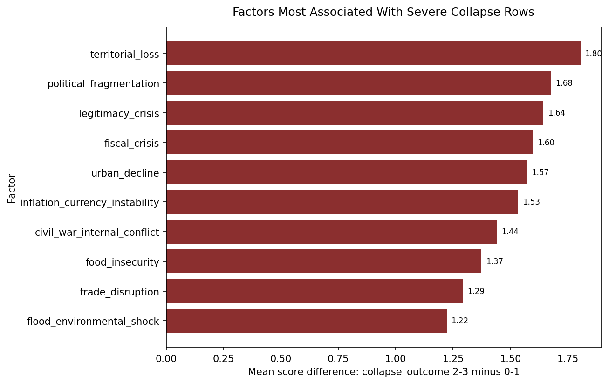

Overview
Collapse Pathways is a comparative historical collapse-pattern analysis project that codes major state, imperial, and regional breakdowns into a structured, uncertainty-aware dataset. The project compares recurring political, economic, social, environmental, military, and institutional signals across historical cases, then extends the framework into a present-day global fragility scenario model.
The goal is not to predict apocalypse or automate historical truth claims. It is to create a disciplined comparative research workflow that can support pattern discovery, pathway comparison, and cautious interpretation.

One of the core findings: severe collapse rows are most strongly associated with territorial loss, political fragmentation, legitimacy crisis, and fiscal stress.
Research Question
Which factors recur most often across major historical collapses, which combinations of factors cluster together, and how strongly do those historical patterns overlap with selected present-day global conditions?
Approach
- Build a comparative dataset where each row represents one case in one time window.
- Code factors on a shared `0, 1, 2, 3, 9` framework, with `9` reserved for unknown or evidence-limited cases.
- Track phase labels, collapse outcomes, confidence levels, source counts, and concise row-level notes.
- Use exploratory notebooks to compare factor frequency, intensity, uncertainty, and case-level pathways.
- Extend the strongest historical signals into a present-day Global Fragility Index and scenario workflow.
Main Findings
- Severe and terminal collapse rows are most strongly associated with territorial loss, political fragmentation, legitimacy crisis, fiscal crisis, and civil or internal conflict.
- The dataset is explicitly uncertainty-aware and distinguishes stronger recurring patterns from evidence-limited or debated factors.
- Environmental and demographic variables matter in important cases, but they also remain among the most uncertainty-limited dimensions in the dataset.
Global Fragility Extension
The project also includes a present-day global extension based on the same historical framework. Rather than producing a collapse prediction, it measures the degree of overlap between current-world conditions and historically recurrent fragility patterns.
- Baseline Global Fragility Index: 73.35 / 100
- Scenario range: 55.25 to 91.45 depending on current-world scoring assumptions
- Interpretation remains exploratory, uncertainty-aware, and explicitly non-predictive
Tech Stack
- Python for data validation, utilities, and workflow scripts
- Jupyter Notebook for exploratory analysis and uncertainty-aware reporting
- Pandas for structured comparative dataset work
- Comparative data analysis for cross-case factor pattern comparison
- Scenario analysis for the present-day global fragility extension
- Research design for cautious coding, interpretation, and review workflow
Limitations
- This is a first-pass machine-assisted coding draft, not final historical ground truth.
- Some variables are difficult to compare consistently across very different historical contexts.
- The present-day global extension depends on manual scoring judgments and should be treated as exploratory.
- Stronger conclusions should rely most on patterns that remain visible despite uncertainty.
GitHub Repository
The full project repository, dataset structure, notebooks, reports, and supporting methodology files are available on GitHub:
github.com/moroianu13/Collapse_Pathways